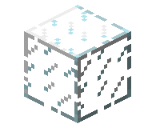

Не можете одолеть орды зомби? Слишком медленны, чтобы расправиться с пауками? Опасаетесь, что криперы и странники Края не оставят от вашего дома и камня на камне? Мало здоровья и совсем нет еды? Нажмите Esc, поставьте сложность на «Мирную», и вот оно — решение всех ваших проблем! Здоровье и сытость начнут очень быстро восстанавливаться, у вас больше не будет падать уровень голода (если вы на «Мирной»)
Топор вместо меча Актуально с 1.9. Гораздо удобнее забивать ваших домашних животных критическим ударом топора, а не мечом. Так вы можете использовать всего лишь каменный топор и убивать свиней, овец и коров одним ударом, а также вы будете наносить урон только одному животному, не задевая соседей.
Если вам хочется срубить дерево целиком, но Вы не можете достать до верха, попробуйте оставить самый нижний блок дерева нетронутым (как пень), залезть на него, срубить дерево и потом добыть блок под собой. Если Вы все ещё не можете достать до верхнего блока древесины, то установите под собой какой-нибудь легко разрушаемый блок (например, земля, шерсть, или другие; вообще можно поставить даже добытый вами блок дерева под собой, хотя он разрушается рукой за 3 секунды), чтобы оказаться ещё выше, или просто поставьте на ствол лестницу, заберитесь на верх, вырубая дорогу в листве, и срубите дерево от вершины.
- Если вам хочется срубить дерево целиком, но Вы не можете достать до верха, попробуйте оставить самый нижний блок дерева нетронутым (как пень), залезть на него, срубить дерево и потом добыть блок под собой. Если Вы все ещё не можете достать до верхнего блока древесины, то установите под собой какой-нибудь легко разрушаемый блок (например, земля, шерсть, или другие; вообще можно поставить даже добытый вами блок дерева под собой, хотя он разрушается рукой за 3 секунды), чтобы оказаться ещё выше, или просто поставьте на ствол лестницу, заберитесь на верх, вырубая дорогу в листве, и срубите дерево от вершины.
- Для гигантских деревьев со стволом толщиной в два блока можно либо попробовать подняться на вершину дерева по лианам (если это дерево джунглей), либо вырубить внутри этого дерева своеобразную винтовую лестницу, подняться по ней наверх и добыть уже все дерево целиком.
- При постройке фермы деревьев отдавайте предпочтение деревьям джунглей или хвойным гигантам: они дают больше всего древесины. Следующими идут тёмные дубы, затем берёзы и акации: они не вырастают выше семи блоков в высоту, и способом, описанным выше, могут быть собраны целиком. Иногда неудобно добывать ели (сосны) и дубы: ели часто вырастают слишком высоко, а дубы иногда получаются раскидистыми (срубать их труднее всего). Чтобы упростить процесс, поставьте твёрдый блок над саженцем на высоте 5-7 блоков от земли, тогда дерево вырастет небольшим.
- Также можно использовать Жемчуг Края: надо его кинуть высоко и в это время быстро вырастить дерево (если и так есть дерево, можно просто кинуть Жемчуг).
Старайтесь пользоваться приспособлениями и механизмами (автоматическими фермами, генераторами, мобофермами…) На данный момент это эффективнейший способ сбережения времени и сил. На их установку часто тратится значительное количество времени, но в дальнейшем они многократно себя окупают. Для всех этих приспособлений есть отдельные гайды, поэтому перечислять их здесь нет смысла.
Если Вы очень часто находитесь подолгу вдали от дома (путешествуя, занимаясь охотой, составлением карт, поиском ценных ресурсов и биомов), то берите с собой кровать. Как только начинает темнеть, устанавливайте её и засыпайте. Пропускать таким образом ночь значительно безопасней, так как враждебные мобы могут вам помешать или даже убить вас, и в темноте легко проглядеть что-нибудь ценное или важное (вход в пещеру или подходящий склон для подъёма на гору, например).
- 1-я полного просмотра блоков (смотрите ниже) через 2 блока со смещением вниз (вверх) на 1 (больше подходит для поиска изумрудной руды). В нём легко запутаться и довольно много проходов, 160 в примере, но таким образом возможно не пропустить ни одного блока между проходами. Но остаются хвосты сверху и снизу.
- 2-я проходка «шахматная» разрезе (смотрите выше) через 3 блока, в шахматном порядке. Для руд, которые генерируются жилами (алмазная, красная, лазуритовая, золотая, железная и угольная руды). Для поиска алмазной руды можно использовать высоту 5-13, на которой генерируются остальные. Таким образом рыть нужно меньше (125 проходок), а эффективность относительно одинакова. И нет хвостов как в первом случае. Проходка может быть любой удобной высоты. Как будет обходиться лава, вода, сыпучие блоки, пещеры и тому подобное остаётся на усмотрение игрока. Такие «карманы» можно закрыть прозрачными блоками и осветить факелом. Все проходки нанесены не были, зелёным маркером указано начало следующей группы. Подсчёты грубые, главное — суть.
Блокируйте истощенные секции шахты В подземных шахтах очень легко заблудиться и долго блуждать по тем местам, где Вы уже все давно добыли. Чтобы избежать этого, огораживайте законченные секции шахт или уже исследованные части пещер. В идеале лучше всего огораживать их чем-либо прозрачным (стеклом, забором, железной решёткой), таким образом Вы сможете увидеть врага если он там появится (знак того, что либо Вы недостаточно осветили шахту, либо проглядели где-то проход в другую пещеру). Также рекомендуется огораживать проходы теми блоками, которые не встречаются под землёй (наглядный пример: Вы встретили в пещере стену из булыжника. Как вы поймете, что это: ваша перегородка или стена сокровищницы?). Поэтому рекомендуется устанавливать возле стены из булыжника стекло.
Использование костной муки После того, как Вы получили шерсть всех нужных вам цветов и приручили то количество волков, которое вам требуется, у костей остается только одно применение: костная мука. Она позволяет моментально (до 13w05a) вырастить любое растение Minecraft, находящееся в подходящих условиях. Старайтесь всегда держать пару костей про запас. При помощи костной муки можно вырастить цветы, грибы и высокую траву, что очень важно при добыче красителей и выживании в суперплоском мире. Использовав 9 единиц костной муки (которые можно получить из трёх костей) на трёх ростках пшеницы (на начальных стадиях роста) и собрав их, можно получить три единицы пшеницы, которых хватит на изготовление буханки хлеба (может пригодиться как аварийный источник еды). Правильно расположив коричневый и красный грибы, удобрив их мукой и собрав получившиеся огромные грибы, можно получить множество грибов для тушения. Также мукой можно мгновенно вырастить саженцы и стволы арбузов и тыкв. Используйте эти возможности с умом, и вам больше не придется ждать того момента, когда вырастут ваши растения на фермах.
Ориентирование на местности Основная статья: Ориентирование на местности Старайтесь отмечать ваш путь какими-нибудь знаками: факелами, рукотворными блоками, цветной шерстью, дорожкой из песка/гравия или красной пыли, цветами, и так далее. Это отнимет у вас некоторое время, но потом вам будет гораздо проще ориентироваться. Также рекомендуется установить дорожные знаки на развилках или перекрестках. А ещё лучше записывайте координаты определённых мест (своего дома, сокровищниц, шахт и т. п., чтобы не потерять нужное вам место). Узнать свои координаты можно приходя в определённое место (которое не хочется терять), и нажав клавишу F3 клавиатуре. Далее, запишите эти координаты (в блокнот, на листик) или снимите скриншот.
Сбор кактуса и тростника Самый быстрый способ собрать кактус или тростник — удалить его нижний блок, тогда все растение выпадет в виде предметов. На фермах тростника лучше удалять второй блок снизу, так как иначе вам потом понадобится высаживать его снова. С кактусами лучше всего разбивать нижний блок, так как иначе есть вероятность, что выпадающие блоки упадут на нижний и исчезнут. Но можно воспользоваться и другим методом: поставить рядом с нижним блоком кактуса нить, на неё сверху поставить ковёр, и приладить липкий поршень так, чтобы он мог выдвигать ковер прямо в блок кактуса. Таким образом, верхний и средний блок кактуса при срабатывании поршня будут ломаться и падать на ковёр. С помощью этого можно легко делать полуавтоматические фермы.
Ускорение крафта Старайтесь всегда крафтить ровное количество предметов, чтобы предотвратить засорение инвентаря ненужными вещами. Например, вам нужен забор. Из одного блока древесины получается четыре доски, которые дают восемь палок, из которых, в свою очередь, получется один блок забора и две палки. Но если создать восемь блоков забора за раз, то Вы израсходуете ровно три блока древесины (12 досок, 24 палки) и таким образом не оставите лишних палок. Как вариант можно скрафтить из оставшихся досок и палок что-нибудь нужное (например, факелы или какой-либо инструмент).
Использование красителей Гораздо экономней не красить шерсть, а красить сразу саму овцу. Во-первых, одним красителем можно покрасить только один блок шерсти, а с крашеной овцы выпадет от одного до трёх блоков шерсти за раз. Во-вторых, после восстановления шерсти овца сохранит свой цвет, что позволит вам и дальше получать шерсть этого цвета. В-третьих, если размножить две овцы одинакового цвета, то появится ягнёнок такого же цвета. Если овцы разного цвета, то ягненок будет иметь смешанную окраску родителей, а когда окраски не смешиваются, то ягненок будет иметь шерсть случайного родителя.
Генератор изумрудов — деревня? Допустим, Вы хотите добыть изумруды, ради этого искали горы, копали шахту и нашли… 13 изумрудов? Есть простой способ добыть изумруды, нужно лишь найти деревню NPC с фермами (которые есть практически в каждой деревне, обычно в больших количествах), подождать, пока на фермах вырастет пшеница, собрать её (на пустые грядки не забудьте посадить семена) и продать фермеру, затем снова ждать и собирать урожай. Таким образом деревни фактически являются бесконечным генератором изумрудов, а так как семена выпадают в количестве от 1-2 и больше, можно сделать несколько новых ферм, чтобы увеличить количество добываемой пшеницы (за один изумруд нужно отдать ~ 20 шт. пшеницы). Житель может закрыть сделку, но помимо пшеницы можно продавать много чего, например картошку или морковку. Также очень выгодно продавать подписанные книги библиотекарю — по одной книге за изумруд. Это будет значительно выгоднее, чем продавать неподписанные книги по 10 штук за изумруд. Не забудьте, что в новейших версиях, жители могут собирать урожай сами, вам нужно успеть забрать пшеницу, до того, как это сделает житель.
- Обойдите всю деревню и «поговорите» с каждым жителем — одному вы продаете 23 шт. товара за 1 изумруд, в то время, как другой купит только 18 шт. того же товара за ту же цену.
- В последних версиях с жителями можно совершать ограниченное количество сделок. Но если вы имеете много разнообразных ресурсов, те же морковь, картофель, пшеницу, тыквы, то вы будете стабильно получать за них изумруды. Если сделка закроется, попробуйте купить другой товар. Продавать желательно по одной партии после чего закрывать диалог, чтобы житель после успешной сделки открыл новые варианты торговли или разблокировал старые. После обновления «Village and Pillage», житель может делать скидки на некоторые товары за постоянную с ним торговлю.